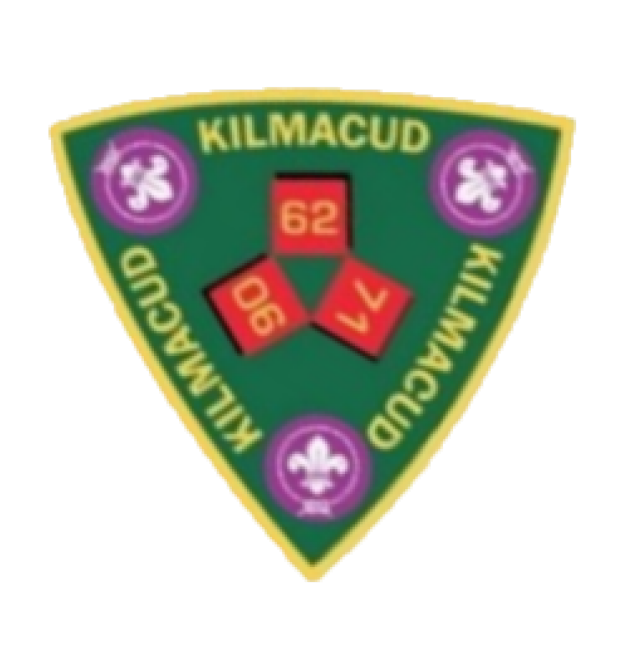
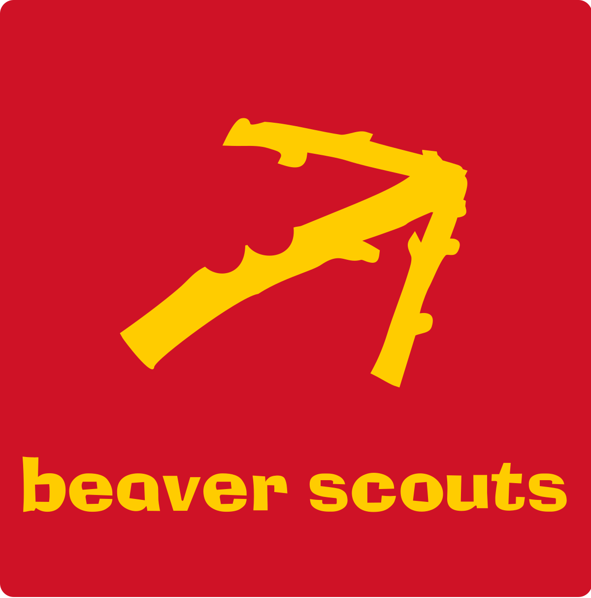
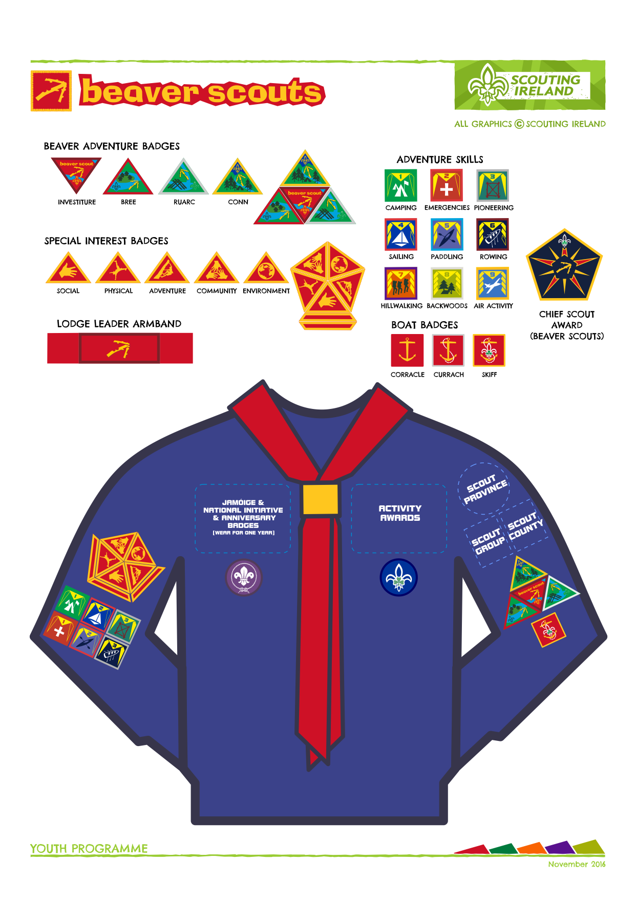
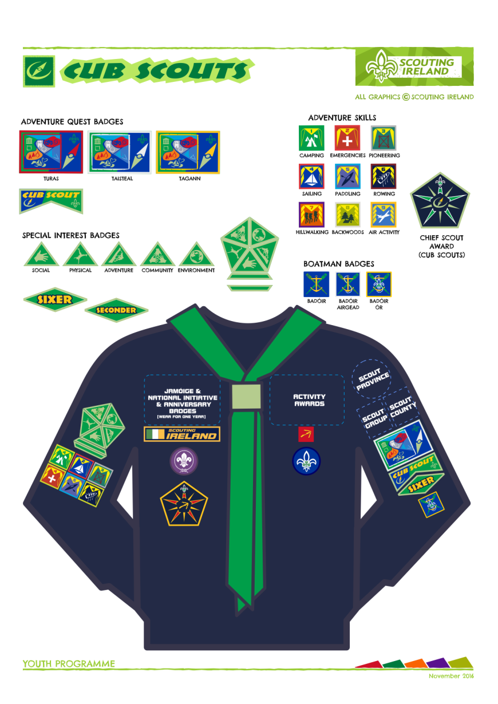
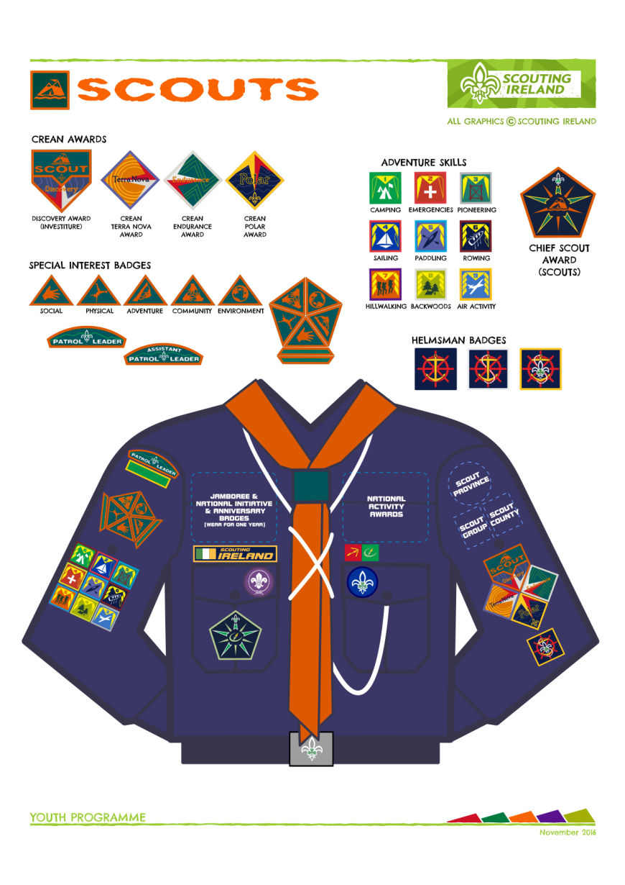
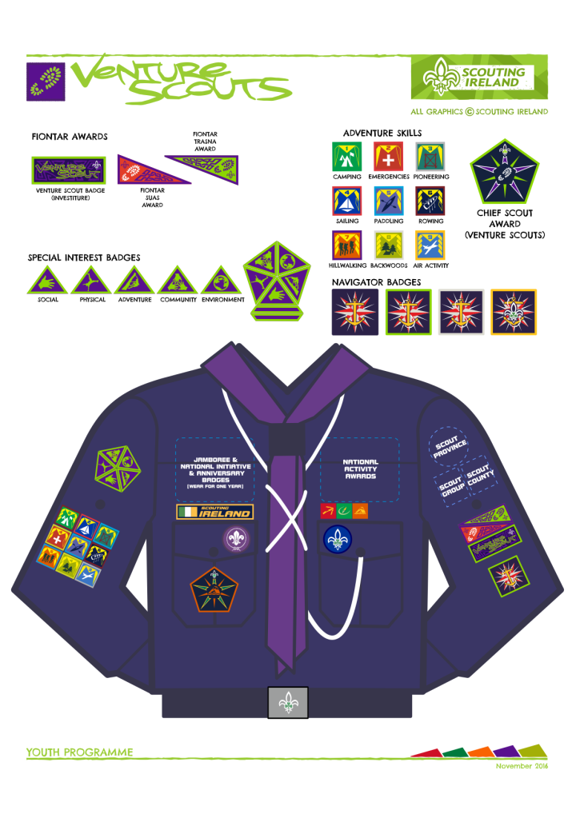

Here are some common resources that our parents often use. We have general resources in this section that will be useful to everyone! The specific sections mostly concern Badge Placement on Jumpers and Shirts.
If a scout does not already have a neckerchief, woggle and troop badge, they will be provided upon investiture.
The website for our Scout organisation, Scouting Ireland:
Scouts.ie
The website for the Scout Shop, where uniform, badges and general Scout memorabilia can be purchased:
TheScoutShop.ie
Our troop badge! The troop you are in is the number that goes on top.


Positioning of Beaver Badges on the jumper

Positioning of Cub Badges on the jumper

Positioning of Scout Badges on the shirt

Positioning of Venture Badges on the shirt
